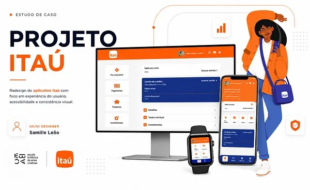
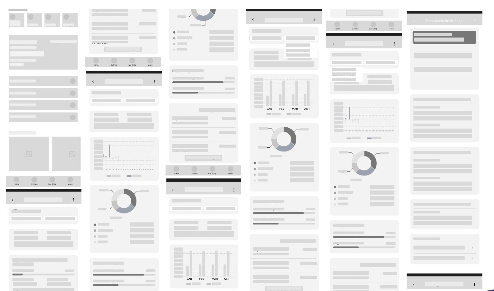
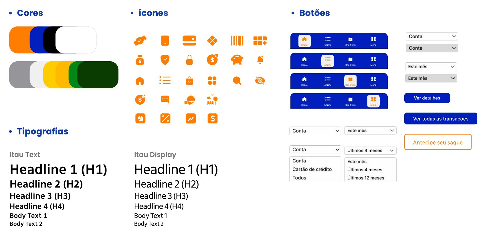
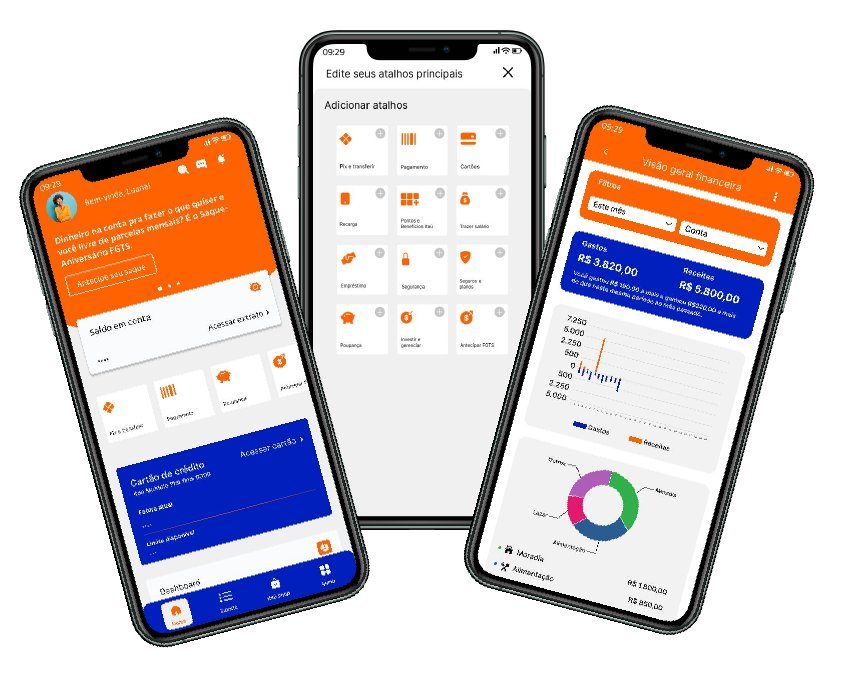

Case study · UX/UI Design · Projeto acadêmico
Itaúbancário digital
Um ecossistema integrado entre celular, computador e relógio, com foco em clareza, controle e consistência.
- Natureza
- Projeto acadêmico · EBAC
- Atuação
- UX/UI Designer
- Método
- Double Diamond
- Plataformas
- Mobile, desktop e watch
- Testes
- 5 participantes · 4 tarefas
- Período
- 2025

01 · Contexto e desafio
Confiança sólida, experiência pesada
Bancos tradicionais competem com fintechs, e os usuários esperam experiências mais rápidas e simples. Mudanças frequentes nos apps bancários causam confusão e atrito em tarefas essenciais.
Simplicidade e agilidade
É o que os usuários passaram a exigir depois das fintechs.
Mudanças geram insegurança
Atualizações constantes deixam as pessoas sem saber onde estão as coisas.
Confiança + fluidez
Manter a segurança de um banco tradicional com a leveza de um app digital.
Objetivo: criar um ecossistema integrado (mobile, desktop e watch) com foco em clareza, controle e consistência.
02 · Discovery
Antes de redesenhar, ouvir as reclamações
Analisei comentários e reclamações reais de usuários nas lojas de aplicativos e em sites de reclamação para entender os pontos de fricção.
Lentidão e instabilidade
Travamentos, demora para carregar e falhas de acesso.
Excesso de informação
Telas carregadas, difíceis de ler no dia a dia.
Funções escondidas
Dificuldade para encontrar o que é importante.
Matriz CSD · separar fato de suposição
| O que levantei | |
|---|---|
| Certezas | O Itaú oferece muitos serviços financeiros · usuários têm problemas de usabilidade no app · o banco usa tecnologias avançadas de proteção de dados |
| Suposições | Funcionalidades poderiam ser apresentadas com mais clareza · jovens preferem bancos digitais pela facilidade · alguns clientes sentem falta de transparência nas taxas |
| Dúvidas | O Itaú é a conta principal dos usuários? · Como avaliam o acesso ao app? · Qual canal mais usam? |
Benchmark · simplicidade × confiança
Nubank
App direto ao ponto, experiência simples e autonomia para o usuário.
Bradesco
Ecossistema completo, vários canais de acesso e atendimento 24h.
03 · Pesquisa e insights
Dados no lugar do achismo
Questionário online com análise qualitativa das respostas abertas, sobre perfil, frequência de acesso, percepção de complexidade e pontos de frustração.
Como você avalia os recursos do app? (1 a 5)
O que os usuários disseram
“Deixar mais claro apenas as principais funções do app, atualmente possui muitas informações em um único lugar.”
“Tem sido muitas mudanças, estão me deixando um pouco confusa.”
“Se a gente tá numa emergência na rua, acaba tendo problemas. O app é algo que tem que ser de fácil e rápido acesso.”
04 · Definição
Duas pessoas, uma mesma pressa
Luana Matos
“Quero resolver rápido e sem distrações.”
Dores: excesso de informação; tarefas simples levam mais tempo que o esperado.
Precisa de: funções principais fáceis de achar e menos elementos que confundem.
Carlos Victor
“Quero praticidade, sem perder confiança.”
Dores: suporte lento; dificuldade de acesso em emergências.
Precisa de: acesso rápido, menos etapas e clareza em taxas e serviços.
Também mapeei empatia e a jornada de cada persona (pesquisando, decidindo, usando e compartilhando) para achar os momentos de atrito.
Grid de priorização · impacto × viabilidade
Soluções escolhidas
Interface simplificada
Navegação mais leve e eficiente.
Dashboard personalizável
Cada pessoa vê o que importa para ela.
Transparência de taxas
Informação clara gera confiança e fidelidade.
Personalização do app
Atalhos ajustados às preferências do usuário.
05 · Experiência do usuário
Um ecossistema, não três interfaces
Componentes, padrões e linguagem visual se conectam entre os dispositivos para reduzir esforço e aumentar a confiança.
Agilidade
Ações rápidas e visão objetiva do dia a dia.
Visão completa
Análise e organização financeira com mais detalhe.
Microtarefas
Consultas e acessos rápidos no pulso.

06 · UI Design
Um guia de estilos para três telas
Defini cores, tipografia, ícones e padrões de componentes para manter a experiência coesa, reduzir variações e deixar a interface clara e escalável.


07 · Validação
Testes com usuários reais
Testes moderados para identificar dificuldades, medir a clareza das telas e garantir que as tarefas essenciais fossem concluídas com fluidez.
| Tarefa | Tempo esperado | Média realizada* |
|---|---|---|
| Consultar o dashboard financeiro | 60 s | 60 s |
| Acessar informações de taxas e juros | 30 s | 33 s |
| Avaliar se a interface é fácil de usar | 45 s | 40 s |
| Personalizar os atalhos do app | 45 s | 42 s |
*Média das três sessões documentadas na apresentação (Aline, Marcus e Patrícia).
“Achei muito legal poder escolher quais atalhos ficam na tela principal.”
“É tudo bem intuitivo, e as informações são claras.”
“A personalização dos atalhos foi tranquila, gostei de poder deixar só o que eu uso no dia a dia.”
Melhorias identificadas
- Simplificar os termos técnicos na área de taxas
- Aumentar alguns ícones, pensando em quem tem dificuldade de visão
- Confirmar visualmente que a personalização dos atalhos foi salva
- Dar mais destaque a seções como Investimentos, que ficaram escondidas
08 · Resultados e aprendizados
Mais limpa, objetiva e confiável
Mais fluidez
Uma experiência mais intuitiva e escalável, alinhada às necessidades reais do dia a dia.
Pequenos ajustes, grande impacto
Clareza, consistência e feedback visual mudam a confiança do usuário em tarefas essenciais.
Escopo acadêmico
Sem acesso a métricas reais do app. Os próximos passos seriam testar em maior escala e medir antes e depois.
Leitura completa
Quer ver todo o processo?
Jornadas, mapas de empatia, wireframes e todas as telas estão no Medium.